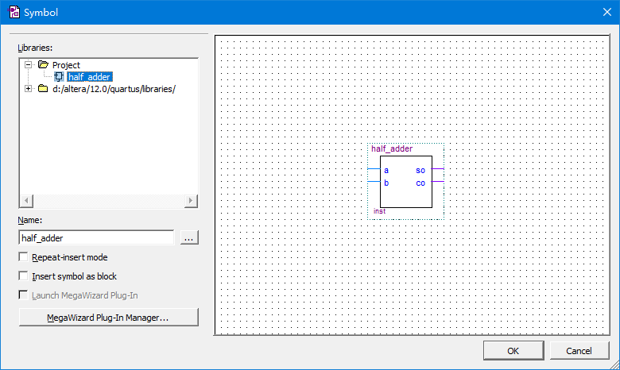

第四章
时序仿真与硬件实现
主要内容
- VHDL程序输入与仿真测试
- 引脚锁定与硬件测试
- 电路原理图设计流程
- HDL版本设置及Analysis & Synthesis 功能
4.1 VHDL程序输入与仿真测试
目标电路的表达可以有多种方式，包括：硬件描述语言HDL文本输入，原理图输入，状态图输入，混合输入，下面简单介绍用Quartus II如何实现。
首先创建新的项目。
【1】创建新项目

【2】指定项目名称和路径


【3】可添加现存的文件，若没有则跳过

【4】指定硬件型号
【5】指定EDA工具，包括综合器、仿真器等
【6】最终报告
4.1.1 VHDL程序输入
创建一个VHDL文件，并开始输入程序
输入程序并保存

4.1.2 约束设置
开始编译之前，必须设置约束：
【1】选择FPGA目标芯片：Assignments --> device
【2】选择配置器件的工作方式
可以选择flash或JTAG，前者可以脱离计算机后稳定的工作。
【3】选择配置器件和编程方式
Assignments --> Setting ，可以设置编译选项。
【4】设置引脚状态
Assignments --> device --> Device and Pin Options，可以设置未用引脚的状态(unused pins)和双功能引脚（dual-purpose pins）的功能；
【5】设置VHDL语言版本
Assignments --> Setting --> Analysis & Synthesis Settings -- > VHDL input，越高越好，至少1993，引入了位操作（左移、右移等）运算符
4.1.3 全程综合与编译
选择 Processing --> Start Compilation ，启动全程编译，包括：输入文件排错，数据网表文件提取，逻辑综合，适配，装配文件（仿真文件与编程配置文件）生成，基于目标器件的工程时序分析等；
【1】排错
【2】查看硬件耗用统计：flow summary
【3】查看时序相关特性报告：timeQuest timing analyzer
4.1.4 仿真
在Quartus II 12.0 之后，已经使用ModelSim来进行仿真。（看前面的介绍）
4.1.5 RTL图观察器
Tools --> Netlist Viewers --> RTL viewer。
Tools --> Netlist Viewers --> Technology Map viewer: FPGA底层门级布局观察器。
Tools --> Netlist Viewers --> State Machine Viewer: 状态机的状态图观察器。

4.2 引脚锁定和硬件测试
4.2.1 引脚锁定
Assignments --> Pin Planner来进行引脚锁定。
4.2.2 编译文件下载
首先将USB-Blaster接到电脑和适配板的JTAG口，选择Tools --> Programmer 进行下载。
4.3 电路原理图设计流程
4.3.1 建立电路原理图工程
【1】新建一个项目，目录在adder1，项目名：half_adder
4.3.1 建立电路原理图工程
【2】File --> New 创建一个schematic file, 并进行文件保存，并指定文件名: half_adder.bdf
4.3.1 建立电路原理图工程
【3】插入元件：在编辑窗口右键：insert --> symbol，在下面的窗口的 Name: 输入元件或引脚名称，常见引脚包括：input, output等
4.3.1 建立电路原理图工程
【4】插入其他元件，如下图
4.3.1 建立电路原理图工程
【5】可以按照前面的步骤，进行约束、全编译、仿真等一系列操作。
4.3.2 将设计项目设置为可调用的元件
选择：File --> Create/Update --> Create Symbol Files for Current File，将当前电路图变为一个元件符号存盘。
4.3.3 设计全加器顶层文件
【1】创建一个新的项目，在相同的adder1目录，项目名是：full_adder

4.3.3 设计全加器顶层文件
【2】在该项目下创建一个新的schematic file，文件名是：full_adder.bdf
4.3.3 设计全加器顶层文件
【3】在编辑窗口双击鼠标左键，在弹出的窗口可以加入先前存储的half_adder元件，如下：
4.3.3 设计全加器顶层文件
【4】加入其它的元件和连线，完成实际电路：如下：
4.3.4 进行仿真和下载测试
和使用VHDL的相同。